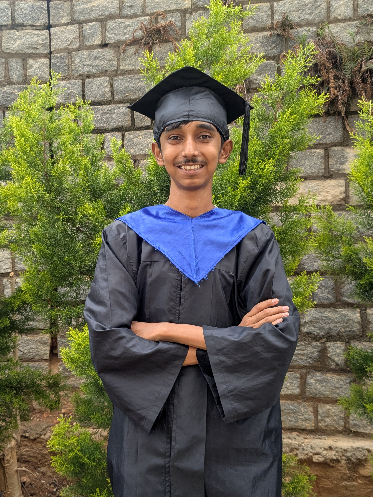

Vaddi Charan Sai Nandan Reddy
Research Intern @ Microsoft

I graduated in Computer Science from PES University with 9.09 CGPA and am currently a Research Intern at Microsoft M365 Research.
My work focuses on efficient LLM Systems, particularly compute-serving system co-design and I am currently exploring SM-Level P/D Disaggregation to a great extent. Apart from that, personally I work towards efficient MoE serving
I also enjoy exploring Test-Time Scaling, Mechanistic Interpretability.
Laghu Localization of RL-Induced Reasoning in Small Language Models
Accepted @ FLINS-ISKE 2026
BioFlux A Multi-Agent Reinforcement Learning Framework for Climate-Driven Ecosystem Simulation
Best Poster Presentation Award @ NCETT, DSCE, Bengaluru, India.